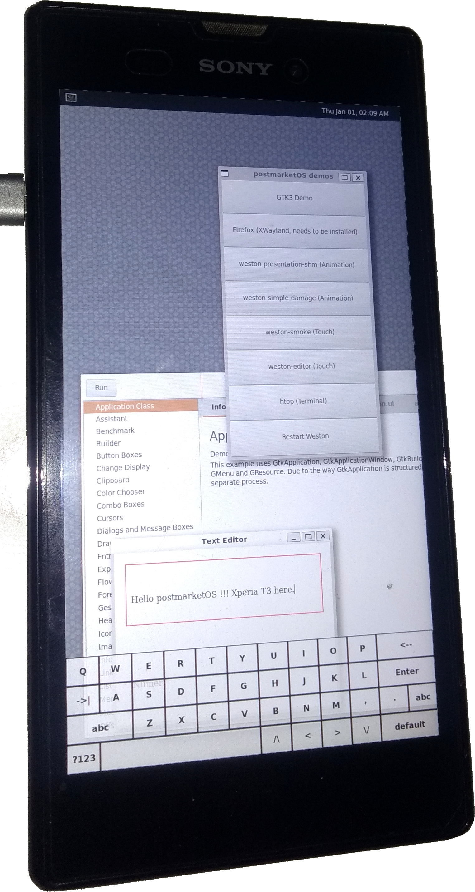

Sony Xperia T3 (sony-seagull)
Jump to navigation
Jump to search
| This device is still running on armhf, although the processor supports armv7. If you own it, change it and test it that way. |
|
 Sony Xperia T3 running Weston | |
| Manufacturer | Sony |
|---|---|
| Name | Xperia T3 |
| Codename | sony-seagull |
| Released | 2014 |
| Category | testing |
| Original software | Android 4.4.4 on Linux 3.4.0 |
| Hardware | |
| Chipset | Qualcomm Snapdragon 400 (MSM8928) |
| CPU | Quad-core 1.4 GHz Cortex-A7 |
| GPU | Adreno 305 |
| Display | 720x1280 TFT |
| Storage | 8 GB + SD card |
| Memory | 1 GB |
| Architecture | armv7 |
{kind=link}
| USB Networking |
Works
|
|---|---|
| Flashing |
Works
|
| Touchscreen |
Works
|
| Display |
Works
|
| WiFi | |
| FDE | |
| Mainline | |
| Battery | |
| 3D Acceleration | |
| Audio |
Broken
|
| Bluetooth | |
| Camera | |
| GPS | |
| Mobile data |
Broken
|
| SMS |
Broken
|
| Calls |
Broken
|
| USB OTG | |
| NFC | |
| Accelerometer | |
|---|---|
| Magnetometer | |
| Ambient Light | |
| Proximity | |
| Hall Effect | |
| Barometer | |
| Power Sensor | |
| Camera Flash | |
|---|---|
| Keyboard | |
| Touchpad | |
| USB-A | |
| HDMI/DP | |
| Ir TX | |
| Ir RX | |
| Stylus | |
| Haptics | |
| Ethernet | |
| FOSS bootloader | |
Contributors
Maintainer(s)
Device owners
What works
- Flash Rootfs
- Flash kernel
- USB Network
- Screen
- Touch (
/dev/input/event0) - Flashlight (
/sys/devices/qcom,camera-led-flash.74/leds/torch-light/brightness)
What does not work
- no Wifi/GSM
- unknown UART pinout
- Audio
What has not been tested
- Compass, accelerometer, gyroscope, GPS, light sensor
- Bluetooth, NFC
- Camera
How to enter flash mode
- Power off the phone
- Press volume up
- Keep volume up pressed, and connect the phone to the computer
- wait until the LED turns blue, then release volume up (this can take a few seconds)
How to turn off the phone
Since you can't remove the battery without opening the phone, you can do the following instead:
- Long press volume up + power button
- press the "off" button behind the SIM/SD card cover with a pin. This breaks the battery connection, so USB needs to be unplugged as well.
Misc
The device shares the yukon platform with other Xperia devices, such as the Xperia E3 (Flamingo), M2 (Eagle) and T2 Ultra (Tianchi). As such, the kernel likely works on all of these.
Boot command line
- When in charging mode:
androidboot.hardware=qcom user_debug=31 msm_rtb.filter=0x37 androidboot.emmc=true androidboot.bootloader=s1 oemandroidboot.s1boot=1274-7024_S1_Boot_MSM8x26_LA1.0_1021 androidboot.serialno=YT91XXXXXX ta_info=1,16,256 startup=0x00010004 warmboot=0x77665501 oemandroidboot.imei=3548XXXXXXXXXXXX oemandroidboot.phoneid=0000:35480506XXXXXXXX oemandroidboot.security=0 oemandroidboot.babe1234=00000200 display_status=on androidboot.baseband=msm
- When starting up normally:
androidboot.hardware=qcom user_debug=31 msm_rtb.filter=0x37 androidboot.emmc=true androidboot.bootloader=s1 oemandroidboot.s1boot=1274-7024_S1_Boot_MSM8x26_LA1.0_1021 androidboot.serialno=YT91XXXXXX ta_info=1,16,256 startup=0x00000001 warmboot=0x00000000 oemandroidboot.imei=3548XXXXXXXXXXXX oemandroidboot.phoneid=0000:35480506XXXXXXXX oemandroidboot.security=0 oemandroidboot.babe1234=00000200 display_status=on androidboot.baseband=msm